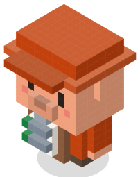
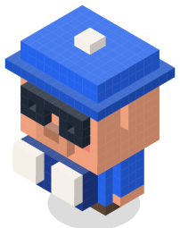
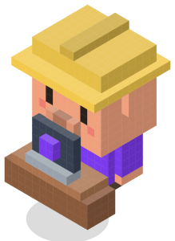
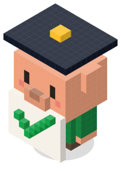
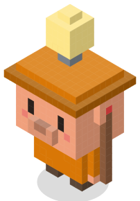

A helper for your assignments, inside Claude Code
Four agents read the brief, find sources, do the work as far as the assignment's AI rule allows, and mark it. A Tutor teaches you the idea behind it. You hand it in yourself.
- Free and open source
- Runs on your own computer
- Follows each assignment's AI rule
1. Install
curl -fsSL https://raw.githubusercontent.com/Dhaswin86/assigent/main/install.sh | bash
2. Run
assigent run
- AnalystChecklist of what the brief asksDone
- Source finderGuides and docs for each partDone
- 3BuilderMaking the calendar as an .xlsx fileWorking
- 4EvaluatorWill mark it out of 100Next
- 5TutorA playground to learn the ideaNext
Behind that one line, five helpers.
How it works
Five helpers, one after another. Each does one job and hands over to the next.

1 of 5 · Reads the brief
Analyst
I read the brief and write a checklist of what is asked. If it leaves a choice open, I ask you once.

2 of 5 · Finds sources
Source finder
I gather the docs and tutorials each part of the checklist needs.

3 of 5 · Does the work
Builder
I do the work in the right file type, only as far as the assignment's AI rule allows.

4 of 5 · Marks it
Evaluator
I mark it out of 100, then ask you 15 to 20 questions at your level.

5 of 5 · Teaches the idea
Tutor
I build a small playground that teaches the idea. Never the answer.
It asks only what your assignment needs
No setup and no fixed questions. It reads the brief first, then asks you once, only what the brief leaves open.
| The brief says | Assigent asks |
|---|---|
| Explore a Zoho product and write a short review. | Which product do you want?"A product" has many answers. That choice is yours. |
| Plan a week of posts for social media. | Which platform or platforms?Instagram, LinkedIn, X, or your own answer. |
| Make a poster with a design tool. | Which tool, and may Assigent use it?Figma, Photoshop, Illustrator or Canva. Apps you said you have come first. |
| Hand in a deck with your name on the first slide. It says nothing about AI. | What name goes on it? How much help do you want?Your name is asked once, then remembered. |
| Write 500 words on the water cycle for Instagram readers. AI is allowed. | Nothing.Topic, platform and AI rule are all fixed. It says so and starts. |
Never picks silently
If the brief leaves an app, product, platform or topic open, you choose. The work follows your answer.
Never asks what it does not need
No app question for an essay. No platform question when the brief names the platform.
Never asks twice
Answers it can reuse, like your name and the apps you have, are remembered on your computer.
Rules it always keeps
Your school's AI rule comes first. Assigent works inside it, and the last step is always yours.
- It never gets around an assignment's AI rule. If AI is not allowed, you get the brief and a reading list, nothing more.
- It never submits, uploads or hands in anything. That step is yours.
- It never signs in for you and never types a password.
- It never sends messages or posts for you.
- Parts that must come from your own life or in your own voice stay as marked gaps for you to fill.
- It opens an app on your computer only after you allowed it for that assignment.
- It runs only when you start it. Nothing watches your portal in the background.
Check your school's rules on AI help too. You are responsible for what you hand in.
Learn it first
For each assignment, the Tutor builds a small interactive page that teaches the idea behind it. It never holds the answer, so you get it even when AI help is not allowed.
Writing an SEO title and description? Type them and watch a live search preview, with a meter that shows when each one is too long.
Two ways to use it
It starts with one question: where is the assignment? Paste it, give a file, or let it read the portal tab open in your browser.
In the terminal
assigent runStarts Claude Code on your next assignment. It asks where the assignment is.
assigent viewOpens a viewer in your browser that shows the agents at work.
assigent statusLists your runs and the evaluator's score for each.
With your browser
- Install the Claude extension in Chrome, Brave or Edge.
- Sign in to your portal in that browser, as you normally do, and open your assignments page.
- Open Claude Code and type
/assigent. - Choose to read it from the portal tab, and allow it. If several assignments are open, pick one.
It asks your permission before reading that tab, reads only assignment pages, never signs in and never submits.
Before you install
What do I need?
A Claude plan that includes Claude Code, with Claude Code installed. New to it? Claude Code is Anthropic's assistant that works in your terminal, and Assigent runs inside it. You also need Python 3, which most Macs and Linux computers already have. The Claude browser extension is optional, if you want Assigent to read the assignment from your portal tab.
Does it cost anything?
Assigent is free and open source under the MIT license. It runs inside Claude Code on your own computer and your own Claude plan.
Will it hand in my work?
No. It never submits, uploads or hands in anything, never signs in for you and never posts. That last step is yours.
What if my assignment does not allow AI?
Then you get the brief and a reading list, nothing more. The Tutor's playground still teaches the idea, because it never holds the answer.
What does the installer change?
It copies files into your home folder only. It never uses sudo.
Where are my answers kept?
Answers it can reuse, like your name and the apps you have, are remembered on your computer, so it never asks twice.
Watch one made-up run
The demo shows the viewer on a pretend assignment, a small to-do app. No real assignment is in it.
See a demo runThat's how it works. Your turn.
Install Assigent
One line in your terminal, then type assigent run. There is nothing to set up first.
curl -fsSL https://raw.githubusercontent.com/Dhaswin86/assigent/main/install.sh | bash